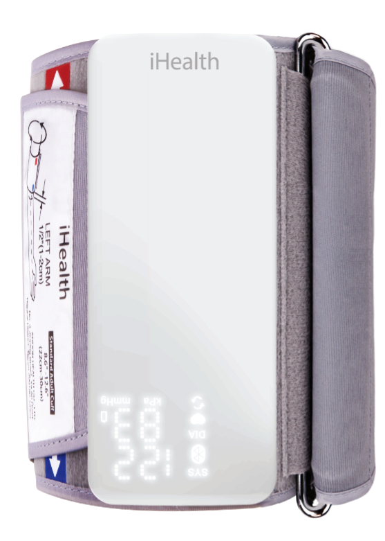

Welcome to iHealth CardioMed
The first Smart 24hr Ambulatory Blood Pressure Monitor
Welcome to the iHealth Cardiomed device. This lightweight, all in one, 25 to 49hr ABPM sits on the arm giving comfortable operation, patient comfort and high quality measurments.
The software used to generate reports on this device has been designed by Medaval Ltd, leaders in the provision of information and assessment of the accuracy and quality of blood pressure devices.
The Blood pressure monitor has been developed by Medaval Ltd in conjunction with iHealth
